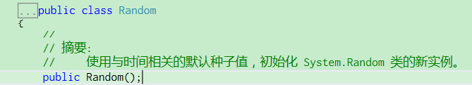

原文出处:本文由博客园博主EmptyGao提供。
原文连接:https://www.cnblogs.com/EmptyBlog/p/10990960.html
原文连接:https://www.cnblogs.com/EmptyBlog/p/10990960.html
使用如上图所示的代码，将会出现如下情况，明明是随机，可值都是同样的，这样的随机几率也太小了，所以估计是代码有问题。

于是搜索了下，发现引起这个问题的原因是C#中的Random是根据时间来产生随机数，而且生成太快。将Random转到定义后就可以发现他的注释就是使用时间的种子值，如下图所示：

网上也有很多方法来解决，主要是两种：一是使用Thread.Sleep()给定需要的时间值，二是想办法使new Random(int Seed)中的参数随机化，参考https://www.cnblogs.com/duanjt/p/7064100.html。
不过突然灵光一闪，有了新的发现：那就是将var random = new Random();这句代码移出循环即可解决，如下图所示：
我们再来看下结果：
完美